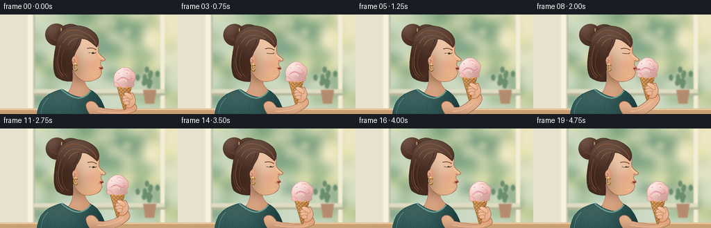
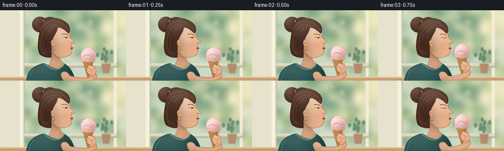

CODING AGENTS AS PIXEL WORLD MODELS
traex/GPT-6.1-Sol · motion_rationality_0002
点击播放 · 原生 RGB 像素
逐轮保存的候选
回放视频、检查图与代码变化。
每份候选均可单独播放。实际图片检查记录在下方工具轨迹中。
候选 01播放与检查图
点击播放 · 原生 RGB 像素


展开代码变化
--- 上一保存版本
+++ 本次保存版本
@@ -0,0 +1,265 @@
+"""Procedural, supersampled RGB animation. No external assets or models."""
+from pathlib import Path
+import math
+import numpy as np
+from PIL import Image, ImageDraw, ImageFilter
+from artifact_io import save
+
+ROOT = Path(__file__).resolve().parent
+W,H,S = 256,144,4
+WW,HH = W*S,H*S
+Y,X = np.mgrid[0:HH,0:WW].astype(np.float32)/S
+rng = np.random.default_rng(34)
+
+def coords(seq, dx=0,dy=0):
+ return [(round((x+dx)*S),round((y+dy)*S)) for x,y in seq]
+
+def curve(commands,dx=0,dy=0):
+ points=[]; p=None; start=None
+ for c in commands:
+ if c[0]=='M':
+ p=np.array(c[1:3],float); start=p.copy(); points.append(tuple(p))
+ elif c[0]=='L':
+ p=np.array(c[1:3],float); points.append(tuple(p))
+ elif c[0]=='C':
+ a,b,q = [np.array(c[i:i+2],float) for i in (1,3,5)]
+ for t in np.linspace(0,1,25)[1:]:
+ v=(1-t)**3*p+3*(1-t)**2*t*a+3*(1-t)*t*t*b+t**3*q
+ points.append(tuple(v))
+ p=q
+ elif c[0]=='Q':
+ a,q = [np.array(c[i:i+2],float) for i in (1,3)]
+ for t in np.linspace(0,1,18)[1:]:
+ v=(1-t)**2*p+2*(1-t)*t*a+t*t*q
+ points.append(tuple(v))
+ p=q
+ elif c[0]=='Z': points.append(tuple(start));p=start
+ return coords(points,dx,dy)
+
+def pathmask(commands,dx=0,dy=0):
+ m=Image.new('L',(WW,HH)); ImageDraw.Draw(m).polygon(curve(commands,dx,dy),fill=255);return m
+
+def ellipse_mask(box):
+ m=Image.new('L',(WW,HH));ImageDraw.Draw(m).ellipse(tuple(round(v*S) for v in box),fill=255);return m
+
+def line(im,commands,color,width=1,dx=0,dy=0):
+ pts=curve(commands,dx,dy)
+ ImageDraw.Draw(im).line(pts,fill=color,width=max(1,round(width*S)),joint='curve')
+ # round the ends for an inked rather than polygonal finish
+ r=width*S/2
+ d=ImageDraw.Draw(im)
+ for x,y in [pts[0],pts[-1]]: d.ellipse((x-r,y-r,x+r,y+r),fill=color)
+
+def shape(im,commands,base,dx=0,dy=0,light=None,shade=None,outline=None,width=.5):
+ m=pathmask(commands,dx,dy)
+ paint(im,m,base,light,shade)
+ if outline: line(im,commands,outline,width,dx,dy)
+ return m
+
+def paint(im,mask,base,light=None,shade=None):
+ a=np.empty((HH,WW,3),np.float32); a[:]=base
+ if light:
+ lx,ly,sx,sy,strength=light
+ g=np.exp(-((X-lx)/sx)**2-((Y-ly)/sy)**2)*strength
+ a+=(255-a)*g[...,None]
+ if shade:
+ lx,ly,sx,sy,strength=shade
+ g=np.exp(-((X-lx)/sx)**2-((Y-ly)/sy)**2)*strength
+ a*=1-g[...,None]
+ im.paste(Image.fromarray(np.clip(a,0,255).astype('uint8')), (0,0),mask)
+
+def oval(im,box,base,light=None,shade=None):
+ paint(im,ellipse_mask(box),base,light,shade)
+
+def overlay(im,mask,color,opacity=255):
+ if opacity!=255: mask=mask.point(lambda v:v*opacity//255)
+ im.paste(color,(0,0),mask)
+
+# Static diffuse cafe / garden background, fully procedural.
+a=np.zeros((HH,WW,3),np.float32)
+a[:]=[201,217,196]
+g=np.exp(-((X-212)/87)**2-((Y-18)/73)**2)
+a+=(np.array([255,239,196])-a)*g[...,None]*.82
+bg=Image.fromarray(a.astype('uint8'))
+d=ImageDraw.Draw(bg)
+for i in range(115):
+ x=float(rng.uniform(0,256));y=float(rng.uniform(-8,130));r=float(rng.uniform(3,16))
+ col=[(122,159,124),(155,185,142),(183,198,144),(228,225,172),(112,154,128)][i%5]
+ d.ellipse(tuple(v*S for v in (x-r,y-r*.7,x+r,y+r*.7)),fill=col)
+bg=bg.filter(ImageFilter.GaussianBlur(7*S))
+# Architectural shapes anchor the softly unfocused background.
+d=ImageDraw.Draw(bg)
+d.rectangle((0,0,42*S,HH),fill=(230,226,206))
+d.rectangle((40*S,0,48*S,HH),fill=(247,242,220))
+d.rectangle((48*S,0,50*S,HH),fill=(185,186,167))
+d.rectangle((231*S,0,237*S,HH),fill=(243,237,216))
+d.rectangle((49*S,108*S,237*S,114*S),fill=(223,220,196))
+d.rectangle((49*S,114*S,237*S,117*S),fill=(179,180,152))
+# creamy left wall and out-of-focus potted herbs on the sill
+for i in range(12):
+ x=212+rng.uniform(-15,15);y=101+rng.uniform(-21,3)
+ d.ellipse(tuple(v*S for v in (x-3,y-5,x+3,y+4)),fill=(106,142,111))
+d.polygon(coords([(206,109),(225,109),(222,129),(209,129)]),fill=(180,139,109))
+bg=bg.filter(ImageFilter.GaussianBlur(.9*S))
+d=ImageDraw.Draw(bg)
+d.rectangle((0,136*S,WW,HH),fill=(201,160,115))
+d.line(coords([(0,137),(256,137)]),fill=(234,201,156),width=2*S)
+for x in (12,24,243):
+ d.line(coords([(x,141),(x+27,142)]),fill=(187,143,102),width=S//2)
+# A few sunlit bokeh glints.
+glow=Image.new('RGB',(WW,HH),(255,245,210))
+m=Image.new('L',(WW,HH));dd=ImageDraw.Draw(m)
+for x,y,r,o in [(183,25,6,85),(216,38,4,93),(163,13,4,75),(204,63,2.4,60),(65,71,4,60)]:
+ dd.ellipse(tuple(v*S for v in (x-r,y-r,x+r,y+r)),fill=o)
+m=m.filter(ImageFilter.GaussianBlur(3*S));bg.paste(glow,(0,0),m)
+
+hair_back=[('M',88,21),('C',91,14,102,11,113,17),('C',128,16,142,29,140,42),('C',144,54,128,72,122,86),('C',113,100,91,99,81,90),('C',73,78,79,54,81,42),('C',75,34,81,23,88,21),('Z',)]
+face=[('M',110,29),('C',128,24,142,33,142,45),('Q',141,52,142,55),('C',144,59,148,61,151,64),('Q',152,66,149,67),('L',145,68),('Q',143.7,71.7,146,74.8),('Q',148.5,76.3,148.1,77.8),('Q',147.7,79.2,145.1,80.6),('Q',147.3,83.4,144.8,87.6),('C',142,94,131,98,121,96),('C',112,94,105,84,101,72),('C',94,61,99,38,110,29),('Z',)]
+neck=[('M',104,77),('L',122,84),('C',120,97,122,103,131,110),('L',137,121),('C',121,132,98,126,94,117),('C',105,106,106,94,104,77),('Z',)]
+shirt=[('M',89,108),('C',95,110,99,116,113,119),('C',122,121,127,116,130,109),('C',141,114,149,127,153,144),('L',53,151),('C',53,125,66,114,89,108),('Z',)]
+front_hair=[('M',82,35),('C',89,13,117,11,133,24),('C',144,32,143,43,139,47),('C',131,39,123,34,117,35),('C',116,45,110,49,107,59),('C',102,62,102,69,106,75),('C',102,87,101,89,101,95),('C',91,97,80,90,79,79),('C',76,60,80,50,82,35),('Z',)]
+
+
+def smooth(x):
+ x=np.clip(x,0,1);return x*x*(3-2*x)
+
+def render(i):
+ t=i/4
+ # One coherent approach, lick, then relaxed withdrawal; no independent prop motion.
+ approach=float(smooth(t/1.35)*(1-smooth((t-2.25)/1.3)))
+ lick=float(smooth((t-1.3)/.35)*(1-smooth((t-2.05)/.25)))
+ pleased=float(smooth((t-2.55)/.65))
+ cx=179-15*approach
+ cy=92-14*approach
+ hx,hy=cx+6,cy+34
+ headx=1.0*approach
+ heady=.28*math.sin(t*1.3)+.35*approach
+ im=bg.copy()
+ # Body / gathered hair behind the neck.
+ shape(im,hair_back,(71,45,36),headx,heady,light=(94,29,34,46,.1),shade=(85,84,30,24,.25),outline=(72,49,38),width=.7)
+ oval(im,(65+headx,13+heady,97+headx,45+heady),(83,52,40),light=(74,19,12,13,.15),shade=(92,37,17,12,.28))
+ for k in range(6):
+ line(im,[('M',75+k*2,18),('C',65+k*2,27,73+k*2,37,85+k*1.2,39)],(111,72,49),.52,headx,heady)
+ line(im,[('M',88,20),('Q',87,31,94,37)],(197,160,107),1.45,headx,heady)
+ shape(im,neck,(206,145,106),headx,heady,light=(110,108,17,22,.17),shade=(117,88,16,12,.22),outline=(153,97,75),width=.6)
+ shape(im,shirt,(51,113,110),light=(84,118,44,26,.18),shade=(148,139,23,28,.29),outline=(39,88,86),width=.75)
+ # knitted fabric texture (restricted to the silhouette)
+ fabric=Image.new('RGB',(WW,HH),(0,0,0));fd=ImageDraw.Draw(fabric)
+ for x in np.arange(55,154,2.3):
+ fd.line(coords([(x,112),(x-6,149)]),fill=(65,128,123),width=1)
+ fm=pathmask(shirt).point(lambda p:p//3)
+ im.paste(fabric,(0,0),fm)
+ line(im,[('M',89,109),('C',100,118,116,129,130,111)],(102,157,144),2.1)
+ line(im,[('M',69,121),('Q',60,130,59,144)],(84,139,129),.65)
+ line(im,[('M',137,123),('Q',139,133,143,143)],(34,90,89),.75)
+ # Face in warm bounced light; the shading is mask-clipped.
+ fm=shape(im,face,(231,172,128),headx,heady,light=(121+headx,46+heady,22,38,.32),shade=(106+headx,75+heady,17,24,.19),outline=(157,105,80),width=.65)
+ cheek=np.exp(-((X-(131+headx))/9.5)**2-((Y-(72+heady))/7)**2)
+ cm=Image.fromarray((cheek*54).astype('uint8'));cm=np.minimum(np.asarray(cm),np.asarray(fm));overlay(im,Image.fromarray(cm),(226,127,111))
+ # The ear breaks the hairline naturally.
+ oval(im,(100+headx,57+heady,113+headx,76+heady),(218,150,114),light=(105+headx,61+heady,5,7,.24))
+ line(im,[('M',107,61),('C',102,59,101,68,106,70),('Q',109,65,106,65)],(168,106,85),.7,headx,heady)
+ shape(im,front_hair,(78,49,36),headx,heady,light=(106+headx,25+heady,32,22,.14),shade=(86,72,22,25,.2),outline=(66,43,35),width=.7)
+ # Flowing curved highlights convey real gathered hair instead of a solid cap.
+ for c,col,w in [
+ ([('M',88,33),('C',96,18,114,20,127,29),('Q',135,34,138,42)],(141,91,58),1.05),
+ ([('M',84,38),('C',91,24,105,22,117,28)],(116,73,49),.65),
+ ([('M',91,41),('C',98,27,111,27,125,34)],(148,97,62),.65),
+ ([('M',98,44),('Q',102,35,112,34)],(160,103,66),.8),
+ ([('M',87,45),('C',81,62,81,80,91,88)],(122,78,50),1),
+ ([('M',92,51),('C',86,65,87,81,97,90)],(103,67,45),.75),
+ ([('M',81,62),('Q',78,81,90,91)],(141,85,53),.6),
+ ([('M',113,36),('Q',110,46,106,52)],(55,36,31),.8),
+ ]: line(im,c,col,w,headx,heady)
+ # Tiny gold hoop earring, illuminated on the window-facing edge.
+ d=ImageDraw.Draw(im)
+ b=tuple(v*S for v in (105+headx,71+heady,112+headx,82+heady))
+ d.arc(b,25,328,fill=(117,85,44),width=2*S)
+ d.arc(tuple(v*S for v in (105.2+headx,70.8+heady,111.4+headx,80.8+heady)),35,320,fill=(240,196,107),width=round(1.1*S))
+ oval(im,(107.3+headx,70.3+heady,109.2+headx,72.2+heady),(255,223,143))
+ # Eyebrow, eye and small anatomy highlights. Eyes soften as she tastes the scoop.
+ line(im,[('M',126,49),('Q',132,46.7,138,50.7)],(89,55,39),1.05,headx,heady)
+ blink=math.exp(-((t-.75)/.10)**2)
+ close=max(lick,blink,.75*pleased)
+ op=1-close
+ eye=[('M',127.9,55.9),('Q',132,53.1-1.1*op,137.1,56),('Q',132.4,56.5+1.35*op,127.9,55.9),('Z',)]
+ if op>.08:
+ shape(im,eye,(255,237,204),headx,heady)
+ em=pathmask(eye,headx,heady)
+ iris=ellipse_mask((132.1+headx,54.2+heady,135.8+headx,58+heady))
+ iris=Image.fromarray(np.minimum(np.array(iris),np.array(em)))
+ overlay(im,iris,(92,79,49))
+ pupil=ellipse_mask((133.5+headx,54.5+heady,135.1+headx,58+heady))
+ pupil=Image.fromarray(np.minimum(np.array(pupil),np.array(em)));overlay(im,pupil,(50,43,32))
+ line(im,[('M',127.9,55.6),('Q',132,54.6+1.6*close,137.1,56)],(74,49,36),.85,headx,heady)
+ line(im,[('M',136.8,55.8),('L',138.1,55.0)],(74,49,36),.6,headx,heady)
+ line(im,[('M',141.4,58),('Q',144.8,62.5,149.6,64.2)],(255,218,173),.9,headx,heady)
+ line(im,[('M',144.4,66.5),('Q',146.5,65.6,147.3,66.5)],(168,106,84),.65,headx,heady)
+ line(im,[('M',133,88),('Q',136,90,140,87.5)],(246,192,147),.65,headx,heady)
+ # Moving arm reaches along a continuous elbow-wrist chain.
+ arm=[('M',128,126),('C',133,124,138,127,142,134),('C',151,136,hx-9,hy+15,hx-4,hy+10),('L',hx+2,hy+1),('Q',hx+11,hy+1,hx+12,hy+9),('C',hx+13,hy+19,159,148,142,151),('C',132,151,124,138,124,133),('Q',123,128,128,126),('Z',)]
+ shape(im,arm,(222,158,115),light=(155,131,38,19,.24),shade=(144,148,35,11,.16),outline=(162,106,76),width=.7)
+ line(im,[('M',141,140),('C',150,141,hx-3,hy+19,hx+2,hy+13)],(249,191,142),.9)
+ # Back of the gripping hand, before the cone.
+ hand=[('M',cx+4,cy+43),('C',cx+11,cy+45,cx+17,cy+37,cx+16,cy+30),('L',cx+13,cy+23),('Q',cx+12,cy+20,cx+9,cy+22),('L',cx+3,cy+28),('L',cx-1,cy+39),('Q',cx-1,cy+42,cx+4,cy+43),('Z',)]
+ shape(im,hand,(226,161,119),light=(cx+12,cy+29,10,12,.23),outline=(164,106,77),width=.65)
+ # Waffle cone: golden, with a genuine clipped crossing lattice.
+ cone=[('M',-11,11),('Q',0,14,11,11),('L',1.3,45),('Q',0,47,-1.3,45),('Z',)]
+ co=shape(im,cone,(194,124,59),cx,cy,light=(cx-6,cy+18,12,22,.27),shade=(cx+9,cy+30,10,25,.20),outline=(147,88,43),width=.65)
+ lattice=Image.new('RGB',(WW,HH),(0,0,0));ld=ImageDraw.Draw(lattice)
+ lattice.paste(im)
+ for j in range(-10,11):
+ u=j*5
+ ld.line(coords([(-20+cx,u+cy),(20+cx,u+40+cy)]),fill=(154,91,42),width=round(.65*S))
+ ld.line(coords([(-20+cx,u+.7+cy),(20+cx,u+40.7+cy)]),fill=(227,170,90),width=round(.4*S))
+ ld.line(coords([(-20+cx,u+40+cy),(20+cx,u+cy)]),fill=(158,95,43),width=round(.65*S))
+ ld.line(coords([(-20+cx,u+39.1+cy),(20+cx,u-.9+cy)]),fill=(231,177,96),width=round(.4*S))
+ im.paste(lattice,(0,0),co)
+ line(im,[('M',-10.4,12),('Q',0,15,10.4,12)],(240,179,99),1.5,cx,cy)
+ # Scalloped strawberry ice cream, maintaining its form throughout motion.
+ scoop=[('M',-14,7),('C',-17,0,-14,-10,-7,-13),('C',-2,-18,8,-16,11,-10),('C',17,-8,17,1,13,7),('C',17,12,9,15,5,12),('C',1,15,-4,14,-6,12),('C',-13,15,-17,11,-14,7),('Z',)]
+ sm=shape(im,scoop,(246,183,177),cx,cy,light=(cx-6,cy-9,16,18,.65),shade=(cx+11,cy+9,17,12,.16),outline=(197,139,118),width=.55)
+ swirls=Image.new('RGB',(WW,HH));swirls.paste(im)
+ for c,col,w in [
+ ([('M',-10,-5),('C',-7,-12,1,-12,6,-8)],(255,230,216),1.35),
+ ([('M',-8,2),('C',-4,-3,1,-1,5,2),('Q',8,4,11,0)],(227,137,145),1.15),
+ ([('M',-6,4),('C',-1,1,2,3,3,5)],(255,216,204),1),
+ ([('M',-12,6),('Q',-8,8,-7,11)],(227,151,150),.8),
+ ([('M',5,7),('Q',8,10,11,8)],(232,159,158),.75),
+ ([('M',0,-11),('Q',3,-13,7,-10)],(240,171,169),.7)
+ ]:line(swirls,c,col,w,cx,cy)
+ im.paste(swirls,(0,0),sm)
+ # Small strawberry flecks: fixed to the scoop, not flickering noise.
+ for xx,yy,rr in [(-8,-7,.45),(4,-7,.4),(9,-3,.5),(-3,0,.35),(-10,3,.4),(5,5,.45),(-1,-10,.3)]:
+ oval(im,(cx+xx-rr,cy+yy-rr,cx+xx+rr,cy+yy+rr),(211,130,135))
+ # Fingers wrap across the cone, allowing the scoop and upper waffle to remain visible.
+ for yy,xoff,ln in [(28,-3,12),(32,-3,11),(36,-1,8)]:
+ f=[('M',cx+xoff+ln,cy+yy-2),('C',cx+xoff+7,cy+yy-4,cx+xoff+1,cy+yy-3,cx+xoff,cy+yy),('C',cx+xoff,cy+yy+2,cx+xoff+5,cy+yy+3,cx+xoff+ln,cy+yy+2),('Z',)]
+ shape(im,f,(232,171,129),light=(cx+1,cy+yy-1,8,4,.20),outline=(177,116,85),width=.48)
+ thumb=[('M',cx+12,cy+29),('C',cx+13,cy+24,cx+6,cy+21,cx+1,cy+21),('Q',cx-2,cy+22,cx+1,cy+25),('L',cx+8,cy+30),('Q',cx+11,cy+32,cx+12,cy+29),('Z',)]
+ shape(im,thumb,(239,180,137),light=(cx+4,cy+23,7,4,.17),outline=(178,118,88),width=.55)
+ oval(im,(cx+.6,cy+21.3,cx+4.3,cy+23.3),(248,203,171))
+ # Mouth is drawn last so the lip/tongue meets the near side of the scoop correctly.
+ mx,my=headx,heady
+ mouth_open=.5+1.05*lick
+ mouth=[('M',143.1,77),('Q',145.5,76.2,148,77.3),('Q',149,78.2,146.4,78.4+mouth_open),('Q',143.6,79.2,143.1,77),('Z',)]
+ shape(im,mouth,(117,53,48),mx,my)
+ line(im,[('M',142.8,76.7),('Q',145.5,75.5,148.1,77)],(183,96,87),.95,mx,my)
+ line(im,[('M',143.4,79.5),('Q',146.2,80.4,147.7,78.8)],(223,135,117),1.0,mx,my)
+ if lick>.02:
+ reach=4.8*lick
+ tongue=[('M',145.6,78.2),('C',147,77.7,148+reach,77.2,148+reach,78.5),('C',148+reach,80.0,147,80.4,145.7,79.3),('Z',)]
+ shape(im,tongue,(225,126,129),mx,my,outline=(177,88,88),width=.4)
+ line(im,[('M',147,78.6),('L',147+reach*.75,78.3)],(251,168,162),.4,mx,my)
+ if pleased>.02:
+ # Smiling corner and a tiny trace of cream after the lick.
+ line(im,[('M',141.5,78.3),('Q',143,80.4,146.6,78.8)],(159,83,72),.6,mx,my)
+ oval(im,(146.5+mx,78.8+my,148.3+mx,79.9+my),(255,225,205))
+ # A warm photographic finish, without framewise texture jitter.
+ out=im.resize((W,H),Image.Resampling.LANCZOS)
+ return np.asarray(out,dtype=np.uint8)
+
+if __name__=='__main__':
+ frames=np.stack([render(i) for i in range(20)])
+ save(frames,ROOT)
+ print('Saved',frames.shape,frames.dtype,'to',ROOT)
可观测工具轨迹
实际执行的命令与返回图片。
命令 1exit 0
/bin/bash -lc 'ls -la && cat prompt.txt && cat GENERATION_RULES.md && cat task_spec.json'
命令 2exit 0
/bin/bash -lc "cat artifact_io.py && python - <<'PY' import importlib.util for m in ['numpy','PIL','cv2','scipy']: print(m, bool(importlib.util.find_spec(m))) PY"
命令 3exit 0
/bin/bash -lc "python - <<'PY'
import importlib.util
print('aggdraw', bool(importlib.util.find_spec('aggdraw')))
PY"命令 4exit 0
/bin/bash -lc "cat > generate.py <<'PY'
\"\"\"Procedural, supersampled RGB animation. No external assets or models.\"\"\"
from pathlib import Path
import math
import numpy as np
from PIL import Image, ImageDraw, ImageFilter
from artifact_io import save
ROOT = Path(__file__).resolve().parent
W,H,S = 256,144,4
WW,HH = W*S,H*S
Y,X = np.mgrid[0:HH,0:WW].astype(np.float32)/S
rng = np.random.default_rng(34)
def coords(seq, dx=0,dy=0):
return [(round((x+dx)*S),round((y+dy)*S)) for x,y in seq]
def curve(commands,dx=0,dy=0):
points=[]; p=None; start=None
for c in commands:
if c[0]=='M':
p=np.array(c[1:3],float); start=p.copy(); points.append(tuple(p))
elif c[0]=='L':
p=np.array(c[1:3],float); points.append(tuple(p))
elif c[0]=='C':
a,b,q = [np.array(c[i:i+2],float) for i in (1,3,5)]
for t in np.linspace(0,1,25)[1:]:
v=(1-t)**3*p+3*(1-t)**2*t*a+3*(1-t)*t*t*b+t**3*q
points.append(tuple(v))
p=q
elif c[0]=='Q':
a,q = [np.array(c[i:i+2],float) for i in (1,3)]
for t in np.linspace(0,1,18)[1:]:
v=(1-t)**2*p+2*(1-t)*t*a+t*t*q
points.append(tuple(v))
p=q
elif c[0]=='Z': points.append(tuple(start));p=start
return coords(points,dx,dy)
def pathmask(commands,dx=0,dy=0):
m=Image.new('L',(WW,HH)); ImageDraw.Draw(m).polygon(curve(commands,dx,dy),fill=255);return m
def ellipse_mask(box):
m=Image.new('L',(WW,HH));ImageDraw.Draw(m).ellipse(tuple(round(v*S) for v in box),fill=255);return m
def line(im,commands,color,width=1,dx=0,dy=0):
pts=curve(commands,dx,dy)
ImageDraw.Draw(im).line(pts,fill=color,width=max(1,round(width*S)),joint='curve')
# round the ends for an inked rather than polygonal finish
r=width*S/2
d=ImageDraw.Draw(im)
for x,y in [pts[0],pts[-1]]: d.ellipse((x-r,y-r,x+r,y+r),fill=color)
def shape(im,commands,base,dx=0,dy=0,light=None,shade=None,outline=None,width=.5):
m=pathmask(commands,dx,dy)
paint(im,m,base,light,shade)
if outline: line(im,commands,outline,width,dx,dy)
return m
def paint(im,mask,base,light=None,shade=None):
a=np.empty((HH,WW,3),np.float32); a[:]=base
if light:
lx,ly,sx,sy,strength=light
g=np.exp(-((X-lx)/sx)**2-((Y-ly)/sy)**2)*strength
a+=(255-a)*g[...,None]
if shade:
lx,ly,sx,sy,strength=shade
g=np.exp(-((X-lx)/sx)**2-((Y-ly)/sy)**2)*strength
a*=1-g[...,None]
im.paste(Image.fromarray(np.clip(a,0,255).astype('uint8')), (0,0),mask)
def oval(im,box,base,light=None,shade=None):
paint(im,ellipse_mask(box),base,light,shade)
def overlay(im,mask,color,opacity=255):
if opacity"'!=255: mask=mask.point(lambda v:v*opacity//255)
im.paste(color,(0,0),mask)
# Static diffuse cafe / garden background, fully procedural.
a=np.zeros((HH,WW,3),np.float32)
a[:]=[201,217,196]
g=np.exp(-((X-212)/87)**2-((Y-18)/73)**2)
a+=(np.array([255,239,196])-a)*g[...,None]*.82
bg=Image.fromarray(a.astype('"'uint8'))
d=ImageDraw.Draw(bg)
for i in range(115):
x=float(rng.uniform(0,256));y=float(rng.uniform(-8,130));r=float(rng.uniform(3,16))
col=[(122,159,124),(155,185,142),(183,198,144),(228,225,172),(112,154,128)][i%5]
d.ellipse(tuple(v*S for v in (x-r,y-r*.7,x+r,y+r*.7)),fill=col)
bg=bg.filter(ImageFilter.GaussianBlur(7*S))
# Architectural shapes anchor the softly unfocused background.
d=ImageDraw.Draw(bg)
d.rectangle((0,0,42*S,HH),fill=(230,226,206))
d.rectangle((40*S,0,48*S,HH),fill=(247,242,220))
d.rectangle((48*S,0,50*S,HH),fill=(185,186,167))
d.rectangle((231*S,0,237*S,HH),fill=(243,237,216))
d.rectangle((49*S,108*S,237*S,114*S),fill=(223,220,196))
d.rectangle((49*S,114*S,237*S,117*S),fill=(179,180,152))
# creamy left wall and out-of-focus potted herbs on the sill
for i in range(12):
x=212+rng.uniform(-15,15);y=101+rng.uniform(-21,3)
d.ellipse(tuple(v*S for v in (x-3,y-5,x+3,y+4)),fill=(106,142,111))
d.polygon(coords([(206,109),(225,109),(222,129),(209,129)]),fill=(180,139,109))
bg=bg.filter(ImageFilter.GaussianBlur(.9*S))
d=ImageDraw.Draw(bg)
d.rectangle((0,136*S,WW,HH),fill=(201,160,115))
d.line(coords([(0,137),(256,137)]),fill=(234,201,156),width=2*S)
for x in (12,24,243):
d.line(coords([(x,141),(x+27,142)]),fill=(187,143,102),width=S//2)
# A few sunlit bokeh glints.
glow=Image.new('RGB',(WW,HH),(255,245,210))
m=Image.new('L',(WW,HH));dd=ImageDraw.Draw(m)
for x,y,r,o in [(183,25,6,85),(216,38,4,93),(163,13,4,75),(204,63,2.4,60),(65,71,4,60)]:
dd.ellipse(tuple(v*S for v in (x-r,y-r,x+r,y+r)),fill=o)
m=m.filter(ImageFilter.GaussianBlur(3*S));bg.paste(glow,(0,0),m)
hair_back=[('M',88,21),('C',91,14,102,11,113,17),('C',128,16,142,29,140,42),('C',144,54,128,72,122,86),('C',113,100,91,99,81,90),('C',73,78,79,54,81,42),('C',75,34,81,23,88,21),('Z',)]
face=[('M',110,29),('C',128,24,142,33,142,45),('Q',141,52,142,55),('C',144,59,148,61,151,64),('Q',152,66,149,67),('L',145,68),('Q',143.7,71.7,146,74.8),('Q',148.5,76.3,148.1,77.8),('Q',147.7,79.2,145.1,80.6),('Q',147.3,83.4,144.8,87.6),('C',142,94,131,98,121,96),('C',112,94,105,84,101,72),('C',94,61,99,38,110,29),('Z',)]
neck=[('M',104,77),('L',122,84),('C',120,97,122,103,131,110),('L',137,121),('C',121,132,98,126,94,117),('C',105,106,106,94,104,77),('Z',)]
shirt=[('M',89,108),('C',95,110,99,116,113,119),('C',122,121,127,116,130,109),('C',141,114,149,127,153,144),('L',53,151),('C',53,125,66,114,89,108),('Z',)]
front_hair=[('M',82,35),('C',89,13,117,11,133,24),('C',144,32,143,43,139,47),('C',131,39,123,34,117,35),('C',116,45,110,49,107,59),('C',102,62,102,69,106,75),('C',102,87,101,89,101,95),('C',91,97,80,90,79,79),('C',76,60,80,50,82,35),('Z',)]
def smooth(x):
x=np.clip(x,0,1);return x*x*(3-2*x)
def render(i):
t=i/4
# One coherent approach, lick, then relaxed withdrawal; no independent prop motion.
approach=float(smooth(t/1.35)*(1-smooth((t-2.25)/1.3)))
lick=float(smooth((t-1.3)/.35)*(1-smooth((t-2.05)/.25)))
pleased=float(smooth((t-2.55)/.65))
cx=179-15*approach
cy=92-14*approach
hx,hy=cx+6,cy+34
headx=1.0*approach
heady=.28*math.sin(t*1.3)+.35*approach
im=bg.copy()
# Body / gathered hair behind the neck.
shape(im,hair_back,(71,45,36),headx,heady,light=(94,29,34,46,.1),shade=(85,84,30,24,.25),outline=(72,49,38),width=.7)
oval(im,(65+headx,13+heady,97+headx,45+heady),(83,52,40),light=(74,19,12,13,.15),shade=(92,37,17,12,.28))
for k in range(6):
line(im,[('M',75+k*2,18),('C',65+k*2,27,73+k*2,37,85+k*1.2,39)],(111,72,49),.52,headx,heady)
line(im,[('M',88,20),('Q',87,31,94,37)],(197,160,107),1.45,headx,heady)
shape(im,neck,(206,145,106),headx,heady,light=(110,108,17,22,.17),shade=(117,88,16,12,.22),outline=(153,97,75),width=.6)
shape(im,shirt,(51,113,110),light=(84,118,44,26,.18),shade=(148,139,23,28,.29),outline=(39,88,86),width=.75)
# knitted fabric texture (restricted to the silhouette)
fabric=Image.new('RGB',(WW,HH),(0,0,0));fd=ImageDraw.Draw(fabric)
for x in np.arange(55,154,2.3):
fd.line(coords([(x,112),(x-6,149)]),fill=(65,128,123),width=1)
fm=pathmask(shirt).point(lambda p:p//3)
im.paste(fabric,(0,0),fm)
line(im,[('M',89,109),('C',100,118,116,129,130,111)],(102,157,144),2.1)
line(im,[('M',69,121),('Q',60,130,59,144)],(84,139,129),.65)
line(im,[('M',137,123),('Q',139,133,143,143)],(34,90,89),.75)
# Face in warm bounced light; the shading is mask-clipped.
fm=shape(im,face,(231,172,128),headx,heady,light=(121+headx,46+heady,22,38,.32),shade=(106+headx,75+heady,17,24,.19),outline=(157,105,80),width=.65)
cheek=np.exp(-((X-(131+headx))/9.5)**2-((Y-(72+heady))/7)**2)
cm=Image.fromarray((cheek*54).astype('uint8'));cm=np.minimum(np.asarray(cm),np.asarray(fm));overlay(im,Image.fromarray(cm),(226,127,111))
# The ear breaks the hairline naturally.
oval(im,(100+headx,57+heady,113+headx,76+heady),(218,150,114),light=(105+headx,61+heady,5,7,.24))
line(im,[('M',107,61),('C',102,59,101,68,106,70),('Q',109,65,106,65)],(168,106,85),.7,headx,heady)
shape(im,front_hair,(78,49,36),headx,heady,light=(106+headx,25+heady,32,22,.14),shade=(86,72,22,25,.2),outline=(66,43,35),width=.7)
# Flowing curved highlights convey real gathered hair instead of a solid cap.
for c,col,w in [
([('M',88,33),('C',96,18,114,20,127,29),('Q',135,34,138,42)],(141,91,58),1.05),
([('M',84,38),('C',91,24,105,22,117,28)],(116,73,49),.65),
([('M',91,41),('C',98,27,111,27,125,34)],(148,97,62),.65),
([('M',98,44),('Q',102,35,112,34)],(160,103,66),.8),
([('M',87,45),('C',81,62,81,80,91,88)],(122,78,50),1),
([('M',92,51),('C',86,65,87,81,97,90)],(103,67,45),.75),
([('M',81,62),('Q',78,81,90,91)],(141,85,53),.6),
([('M',113,36),('Q',110,46,106,52)],(55,36,31),.8),
]: line(im,c,col,w,headx,heady)
# Tiny gold hoop earring, illuminated on the window-facing edge.
d=ImageDraw.Draw(im)
b=tuple(v*S for v in (105+headx,71+heady,112+headx,82+heady))
d.arc(b,25,328,fill=(117,85,44),width=2*S)
d.arc(tuple(v*S for v in (105.2+headx,70.8+heady,111.4+headx,80.8+heady)),35,320,fill=(240,196,107),width=round(1.1*S))
oval(im,(107.3+headx,70.3+heady,109.2+headx,72.2+heady),(255,223,143))
# Eyebrow, eye and small anatomy highlights. Eyes soften as she tastes the scoop.
line(im,[('M',126,49),('Q',132,46.7,138,50.7)],(89,55,39),1.05,headx,heady)
blink=math.exp(-((t-.75)/.10)**2)
close=max(lick,blink,.75*pleased)
op=1-close
eye=[('M',127.9,55.9),('Q',132,53.1-1.1*op,137.1,56),('Q',132.4,56.5+1.35*op,127.9,55.9),('Z',)]
if op>.08:
shape(im,eye,(255,237,204),headx,heady)
em=pathmask(eye,headx,heady)
iris=ellipse_mask((132.1+headx,54.2+heady,135.8+headx,58+heady))
iris=Image.fromarray(np.minimum(np.array(iris),np.array(em)))
overlay(im,iris,(92,79,49))
pupil=ellipse_mask((133.5+headx,54.5+heady,135.1+headx,58+heady))
pupil=Image.fromarray(np.minimum(np.array(pupil),np.array(em)));overlay(im,pupil,(50,43,32))
line(im,[('M',127.9,55.6),('Q',132,54.6+1.6*close,137.1,56)],(74,49,36),.85,headx,heady)
line(im,[('M',136.8,55.8),('L',138.1,55.0)],(74,49,36),.6,headx,heady)
line(im,[('M',141.4,58),('Q',144.8,62.5,149.6,64.2)],(255,218,173),.9,headx,heady)
line(im,[('M',144.4,66.5),('Q',146.5,65.6,147.3,66.5)],(168,106,84),.65,headx,heady)
line(im,[('M',133,88),('Q',136,90,140,87.5)],(246,192,147),.65,headx,heady)
# Moving arm reaches along a continuous elbow-wrist chain.
arm=[('M',128,126),('C',133,124,138,127,142,134),('C',151,136,hx-9,hy+15,hx-4,hy+10),('L',hx+2,hy+1),('Q',hx+11,hy+1,hx+12,hy+9),('C',hx+13,hy+19,159,148,142,151),('C',132,151,124,138,124,133),('Q',123,128,128,126),('Z',)]
shape(im,arm,(222,158,115),light=(155,131,38,19,.24),shade=(144,148,35,11,.16),outline=(162,106,76),width=.7)
line(im,[('M',141,140),('C',150,141,hx-3,hy+19,hx+2,hy+13)],(249,191,142),.9)
# Back of the gripping hand, before the cone.
hand=[('M',cx+4,cy+43),('C',cx+11,cy+45,cx+17,cy+37,cx+16,cy+30),('L',cx+13,cy+23),('Q',cx+12,cy+20,cx+9,cy+22),('L',cx+3,cy+28),('L',cx-1,cy+39),('Q',cx-1,cy+42,cx+4,cy+43),('Z',)]
shape(im,hand,(226,161,119),light=(cx+12,cy+29,10,12,.23),outline=(164,106,77),width=.65)
# Waffle cone: golden, with a genuine clipped crossing lattice.
cone=[('M',-11,11),('Q',0,14,11,11),('L',1.3,45),('Q',0,47,-1.3,45),('Z',)]
co=shape(im,cone,(194,124,59),cx,cy,light=(cx-6,cy+18,12,22,.27),shade=(cx+9,cy+30,10,25,.20),outline=(147,88,43),width=.65)
lattice=Image.new('RGB',(WW,HH),(0,0,0));ld=ImageDraw.Draw(lattice)
lattice.paste(im)
for j in range(-10,11):
u=j*5
ld.line(coords([(-20+cx,u+cy),(20+cx,u+40+cy)]),fill=(154,91,42),width=round(.65*S))
ld.line(coords([(-20+cx,u+.7+cy),(20+cx,u+40.7+cy)]),fill=(227,170,90),width=round(.4*S))
ld.line(coords([(-20+cx,u+40+cy),(20+cx,u+cy)]),fill=(158,95,43),width=round(.65*S))
ld.line(coords([(-20+cx,u+39.1+cy),(20+cx,u-.9+cy)]),fill=(231,177,96),width=round(.4*S))
im.paste(lattice,(0,0),co)
line(im,[('M',-10.4,12),('Q',0,15,10.4,12)],(240,179,99),1.5,cx,cy)
# Scalloped strawberry ice cream, maintaining its form throughout motion.
scoop=[('M',-14,7),('C',-17,0,-14,-10,-7,-13),('C',-2,-18,8,-16,11,-10),('C',17,-8,17,1,13,7),('C',17,12,9,15,5,12),('C',1,15,-4,14,-6,12),('C',-13,15,-17,11,-14,7),('Z',)]
sm=shape(im,scoop,(246,183,177),cx,cy,light=(cx-6,cy-9,16,18,.65),shade=(cx+11,cy+9,17,12,.16),outline=(197,139,118),width=.55)
swirls=Image.new('RGB',(WW,HH));swirls.paste(im)
for c,col,w in [
([('M',-10,-5),('C',-7,-12,1,-12,6,-8)],(255,230,216),1.35),
([('M',-8,2),('C',-4,-3,1,-1,5,2),('Q',8,4,11,0)],(227,137,145),1.15),
([('M',-6,4),('C',-1,1,2,3,3,5)],(255,216,204),1),
([('M',-12,6),('Q',-8,8,-7,11)],(227,151,150),.8),
([('M',5,7),('Q',8,10,11,8)],(232,159,158),.75),
([('M',0,-11),('Q',3,-13,7,-10)],(240,171,169),.7)
]:line(swirls,c,col,w,cx,cy)
im.paste(swirls,(0,0),sm)
# Small strawberry flecks: fixed to the scoop, not flickering noise.
for xx,yy,rr in [(-8,-7,.45),(4,-7,.4),(9,-3,.5),(-3,0,.35),(-10,3,.4),(5,5,.45),(-1,-10,.3)]:
oval(im,(cx+xx-rr,cy+yy-rr,cx+xx+rr,cy+yy+rr),(211,130,135))
# Fingers wrap across the cone, allowing the scoop and upper waffle to remain visible.
for yy,xoff,ln in [(28,-3,12),(32,-3,11),(36,-1,8)]:
f=[('M',cx+xoff+ln,cy+yy-2),('C',cx+xoff+7,cy+yy-4,cx+xoff+1,cy+yy-3,cx+xoff,cy+yy),('C',cx+xoff,cy+yy+2,cx+xoff+5,cy+yy+3,cx+xoff+ln,cy+yy+2),('Z',)]
shape(im,f,(232,171,129),light=(cx+1,cy+yy-1,8,4,.20),outline=(177,116,85),width=.48)
thumb=[('M',cx+12,cy+29),('C',cx+13,cy+24,cx+6,cy+21,cx+1,cy+21),('Q',cx-2,cy+22,cx+1,cy+25),('L',cx+8,cy+30),('Q',cx+11,cy+32,cx+12,cy+29),('Z',)]
shape(im,thumb,(239,180,137),light=(cx+4,cy+23,7,4,.17),outline=(178,118,88),width=.55)
oval(im,(cx+.6,cy+21.3,cx+4.3,cy+23.3),(248,203,171))
# Mouth is drawn last so the lip/tongue meets the near side of the scoop correctly.
mx,my=headx,heady
mouth_open=.5+1.05*lick
mouth=[('M',143.1,77),('Q',145.5,76.2,148,77.3),('Q',149,78.2,146.4,78.4+mouth_open),('Q',143.6,79.2,143.1,77),('Z',)]
shape(im,mouth,(117,53,48),mx,my)
line(im,[('M',142.8,76.7),('Q',145.5,75.5,148.1,77)],(183,96,87),.95,mx,my)
line(im,[('M',143.4,79.5),('Q',146.2,80.4,147.7,78.8)],(223,135,117),1.0,mx,my)
if lick>.02:
reach=4.8*lick
tongue=[('M',145.6,78.2),('C',147,77.7,148+reach,77.2,148+reach,78.5),('C',148+reach,80.0,147,80.4,145.7,79.3),('Z',)]
shape(im,tongue,(225,126,129),mx,my,outline=(177,88,88),width=.4)
line(im,[('M',147,78.6),('L',147+reach*.75,78.3)],(251,168,162),.4,mx,my)
if pleased>.02:
# Smiling corner and a tiny trace of cream after the lick.
line(im,[('M',141.5,78.3),('Q',143,80.4,146.6,78.8)],(159,83,72),.6,mx,my)
oval(im,(146.5+mx,78.8+my,148.3+mx,79.9+my),(255,225,205))
# A warm photographic finish, without framewise texture jitter.
out=im.resize((W,H),Image.Resampling.LANCZOS)
return np.asarray(out,dtype=np.uint8)
if __name__=='__main__':
frames=np.stack([render(i) for i in range(20)])
save(frames,ROOT)
print('Saved',frames.shape,frames.dtype,'to',ROOT)
PY
python generate.py"命令 5exit 0
/bin/bash -lc "python - <<'PY'
from pathlib import Path
import numpy as np
from PIL import Image
p=Path('.')
f=sorted((p/'frames').glob('*.png'))
a=np.stack([np.asarray(Image.open(x)) for x in f])
assert a.shape==(20,144,256,3) and a.dtype==np.uint8
assert all(Image.open(x).mode=='RGB' for x in f)
assert np.load('pixels.npz')['pixels'].shape==(144,256,20)
print('Verified RGB frames, dimensions, and frame count.')
print('Outputs:', ', '.join(x.name for x in p.iterdir() if x.name in ['generate.py','pixels.npz','index.html','inspection.png','transition_check.png','frames']))
PY
command -v ffmpeg || true"保存候选 1 份；完成命令 5 次；可验证图片返回 0 张。原始 API 响应与完整日志保留在本地。